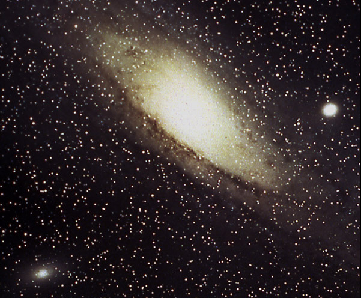
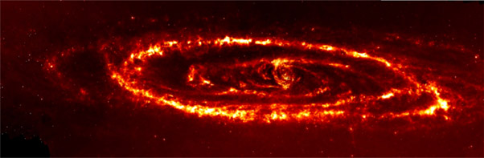
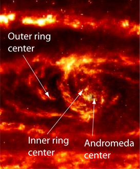
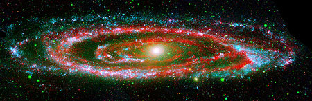

Andromeda Galaxy

Andromeda Galaxy (NASA image)
The Andromeda Galaxy, M31, is the nearest major galaxy to our own Milky Way. It is about 900 kiloparsecs or 3 million light years away, as measured by it's brightest Cepheid variable stars. It is rather similar to our own galaxy in structure. It shows spiral arms, a bulging central disc and is about 30 kiloparsecs across. The individual stars in the image are foreground stars in our own galaxy.

|
 |
A very different view of the Andromeda Galaxy is this infrared view taken by NASA's Spitzer Space Telescope . It revealed a never-before-seen dust ring deep within the Andromeda galaxy. Combined with previous data about an outer ring, it was interpreted as evidence that the neighboring dwarf galaxy M32 collided with the Andromeda Galaxy about 210 million years ago, plunging through its central disc. |
- blue 135-175 nm
- green 175-280 nm
- red 24 microns
(24000 nm)
|
 |
This false color image shows the differences in the appearance of the Andromeda Galaxy at different wavelengths. The blue and green images were actually taken in the ultraviolet by the Galaxy Evolution Explorer in 2003. The red image is actually taken in the infrared by the MIPS instrument. They list the distance as 780 kpc. The image credit is NASA/JPL-Caltech/K. Gordon (Univ. of Ariz.) & GALEX Science
|
Index
Galaxy concepts |